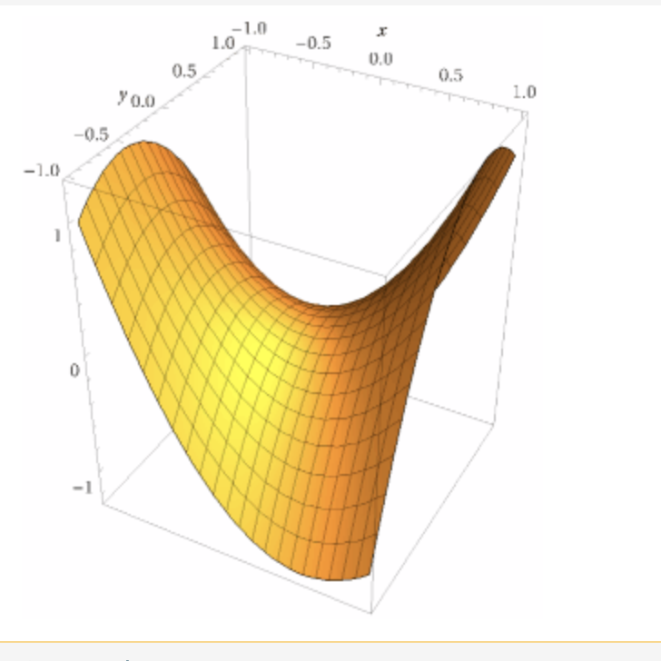
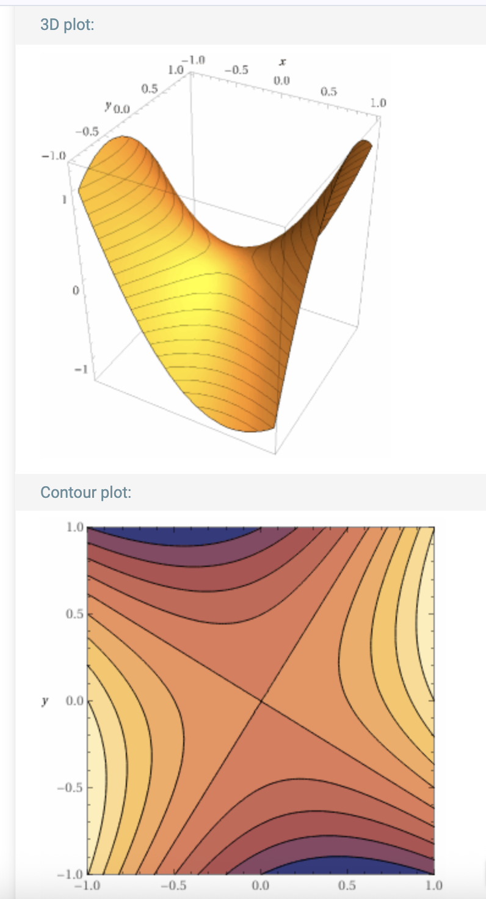
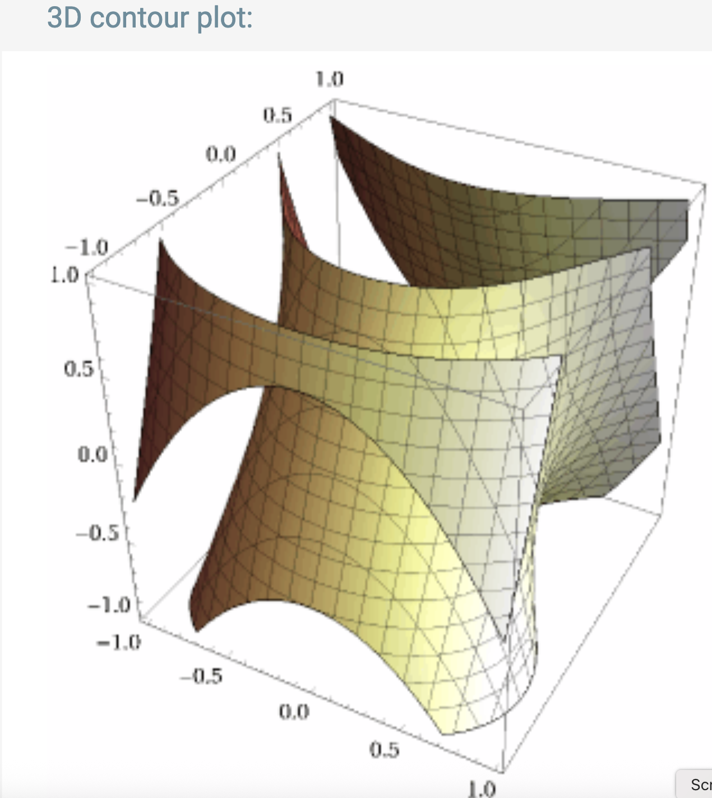
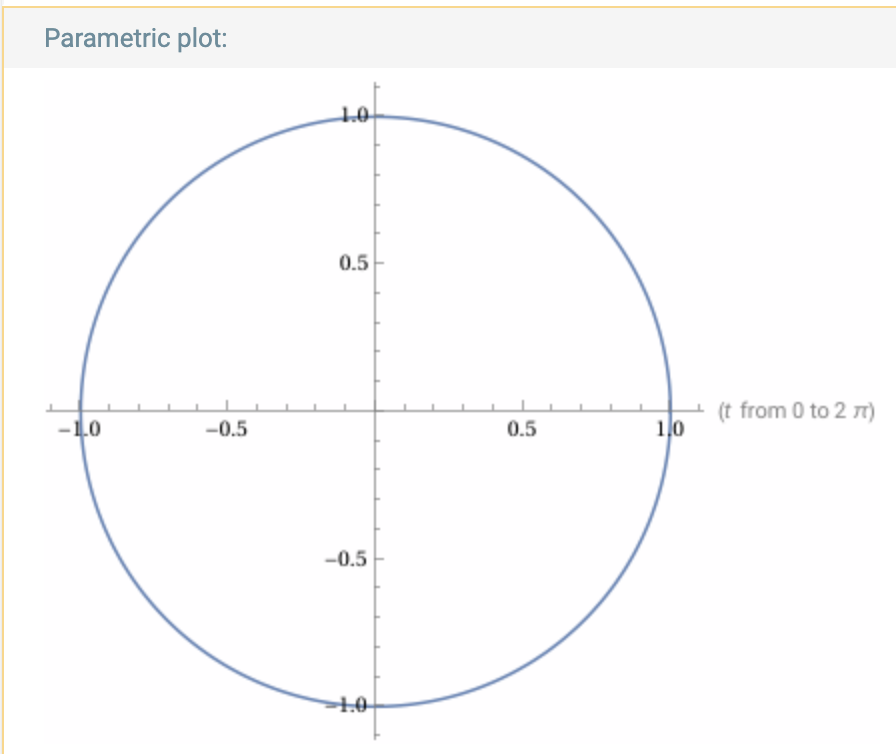
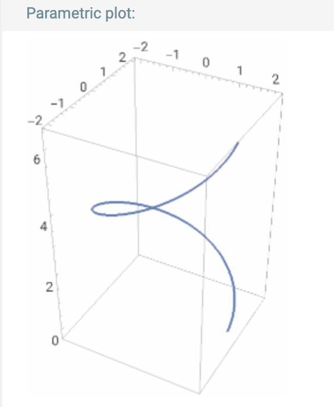
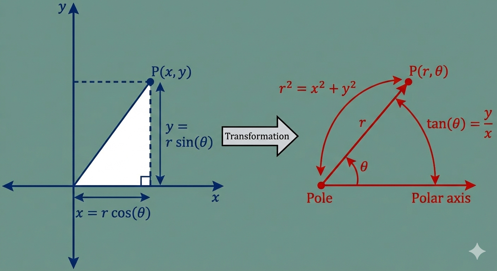
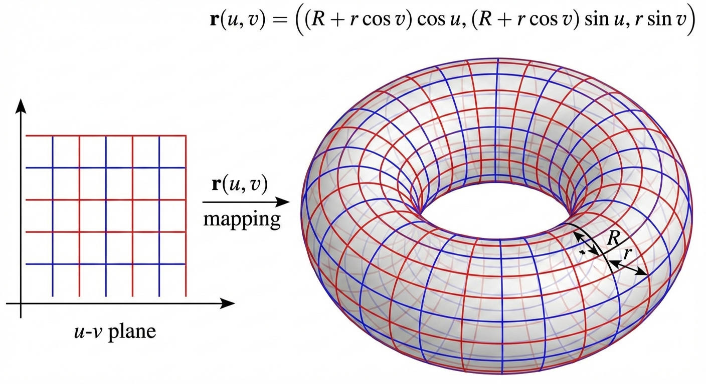
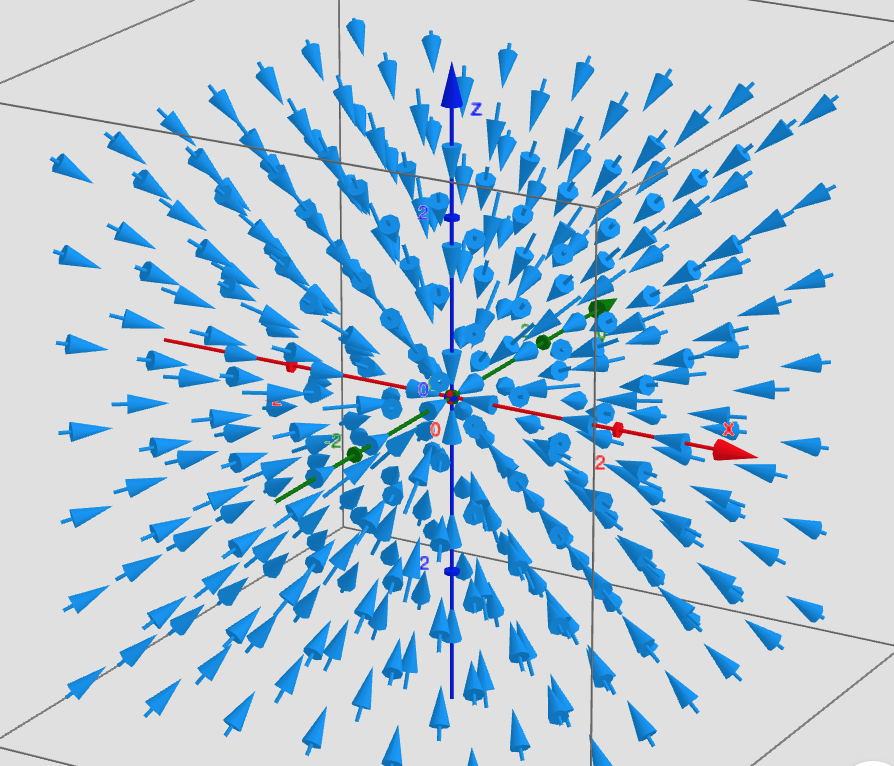

Una parte importante del cálculo es analizar funciones para obtener
información sobre ellas. Como ahora tenemos funciones de varias variables
las combinaciones son numerosas:
funciones que mandan vectores a números (por ejemplo, la temperatura en cada punto del espacio).
funciones que mandan números a vectores (por ejemplo, la trayectoria de una nave espacial con respecto al tiempo).
funciones que mandan vectores a vectores (por ejemplo, la fuerza de un campo magnético en cada punto del espacio).
Además, las gráficas, que en cálculo de una variable eran tan útiles van perdiendo
terreno cuando el número de variables aumenta por lo que se necesitan algunas ideas
para visualizar dichas funciones.
En esta sección vamos a ver algunos ejemplos de funciones y herramientas para un estudio básico.
Definición
Una función escalar (o que toma valores reales) es simplemente una función
\(f:D\to \mathbb{R}\) donde \(D\) es un subconjunto de algún \(\mathbb{R}^n\).
Gráfica
Si \(f:D\subseteq \mathbb{R}^n \to \mathbb{R}\) es una función escalar su gráfica
se define como el subconjunto de \(\mathbb{R}^{n+1}\) dado por
\[
\textrm{Gráfica}(f)=\{(x,f(x)): x\in D\}
\]
En el caso de funciones de una variable, \(n=1\), por lo que
la gráfica es un subconjunto de \(\mathbb{R}^2\) y es la gráfica que conocemos
de cálculo 1 y 2.
Para funciones de dos variables, \(n=2\), por lo que la gráfica es un
subconjunto de \(\mathbb{R}^3\) y la gráfica se conoce como una superficie.

Para funciones de tres variables la gráfica es un subconjunto de \(\mathbb{R}^4\) por lo
que ya no es posible dibujar la gráfica. Asi que para funciones de tres o más variables
las gráficas, como una herramienta visual, dejan de ser útiles.
Conjuntos de nivel
Ya que las gráficas dejan de ser prácticas en dimensión 3 o más el siguiente recurso
es ver los conjuntos de nivel.
Dada una función $f:D\subseteq \mathbb{R}^n \to \mathbb{R}$, el conjunto de nivel, correspondiente
al valor $c\in \mathbb{R}$, es el subconjunto de \(\mathbb{R}^n\) dado por:
$$
N_c(f)=\{ p\in D: f(p)=c \}
$$
Para funciones de dos variables, $D\subseteq \mathbb{R}^2$, y los conjuntos de nivel se llaman curvas de
nivel. Por ejemplo para \(f(x,y)=x^2+xy-y^2\) la gráfica y las
curvas de nivel se ven:

Observación: las curvas de nivel se obtienen al cortar la gráfica con planos
paralelos al plano \(xy\).
Para funciones de tres variables, $D\subseteq \mathbb{R}^3$, y los conjuntos de
nivel se llaman superficies de nivel. Por ejemplo
para \(f(x,y,z)=x^2-y^3-zy\) algunas superficies de nivel se ven:

Para cuatro o más variables los subconjuntos de nivel no se puede dibujar pues
son subconjuntos de espacios de dimensión cuatro o mayor.
Definición
Otro tipo de funciones son las que a mandan números a vectores. Dentro de
estas las más comunes son las trayectorias parametrizadas.
Una trayectoria parametrizada en \(\mathbb{R}^n\) es una función $\gamma:I \to \mathbb{R}^n$, donde $I \subseteq \mathbb{R}$ es un intervalo.
Dada una trayectoria $\gamma$ la curva generada por \(\gamma\) (también conocida
como traza) es el subconjunto de \(\mathbb{R}^n\) dado por:
$$
\textrm{Traza}(\gamma)=\{ \gamma(t): t\in I\}
$$
En dimensión dos una curva parametrizada tiene
una regla de correspondencia que se ve como \(\gamma(t)=(x(t),y(t))\), donde
\(x,y:I \to \mathbb{R}\) son dos funciones.
Por ejemplo, \(\gamma(t)=(\cos(t),\sen(t))\), \(t\in [0,2\pi]\),
dibuja un círculo de radio 1 (o también se dice que tiene una traza que es un
círculo de radio 1). Nota: como los intervalos en \(\mathbb{R}\) tienen una
dirección natural (de izquierda a derecha) ésto induce una orientación
en la curva parametrizada. En el ejemplo anterior el círculo se recorre
en el sentido contrario a las manecillas del reloj.

En dimensión tres una curva parametrizada tiene
una regla de correspondencia que se ve como \(\gamma(t)=(x(t),y(t),z(t))\), donde
\(x,y,z:I \to \mathbb{R}\) son dos funciones.
Por ejemplo, \(\gamma(t)=(\cos(t),\sen(t),\cos(t))\), \(t\in [0,2\pi]\),
dibuja una espiral. Nota: la misma idea de orientación se tiene presente
en dimensión 3, asi que ésta espiral "sube".

Para curvas en cuatro o más dimensiones la traza ya no se puede dibujar.
Definición
Por último están las funciones que mandan vectores en vectores. También
llamadas funciones vectoriales o campos vectoriales, \(F:D\subseteq \mathbb{R}^m \to \mathbb{R}^n\).
Vairando los valores de las dimensiones del dominio y codominio
se puede ver que estas funciones incluyen todas las anteriores.
A continuación mencionamos algunos ejemplos.
Cambios de coordenadas.
Funciones que en las que el dominio y codominio tienen la misma dimensión. La idea
es que transforman la forma de representar los puntos y tienen una función inversa
que permite regresar a las coordeandas originales.
Coordenadas polares.
\[
T: [0,\infty)\times [0,2\pi) \to \mathbb{R}^2, \,
T(r,\theta)=(r\cos(\theta), r\sen(\theta))
\]
con inversa
\[
S:\mathbb{R}^2\to [0,\infty)\times [0,2\pi) , \, S(x,y)=( \sqrt{x^2+y^2},\theta)
\]
donde \(\theta\) es el ángulo de \((x,y)\) con el eje \(x\).

Coordenas cilíndricas.
\[
T:[0,\infty)\times [0,2\pi) \times \mathbb{R} \to \mathbb{R}^3, \,
T(r,\theta,z)=(r\cos(\theta),r\sen(\theta),z)
\]
con inversa
\[
S:\mathbb{R}^3 \to [0,\infty)\times [0,2\pi) \times \mathbb{R},\,
S(x,y,z)=(\sqrt{x^2+y^2}, \theta, z)
\]
donde \(\theta\) es el ángulo del punto \((x,y)\) con el eje \(x\).
Superficies parametrizadas.
Son funciones que van de subconjuntos de \(\mathbb{R}^2\) a \(\mathbb{R}^3\)
que permiten parametrizar, o dar coordenadas, a superficies en \(\mathbb{R}^3\).
Las superficies son subconjuntos de \(\mathbb{R}^3\), como planos, esferos o toros, que
surgen y son útiles en analizar problemas.
El toro.
Una parametrización del toro está dada por
\begin{eqnarray*}
r &:&[0,2\pi]\times [0,2\pi]\to \mathbb{R}^3, \\
r(u,v)&=&((R+r\cos(v))\cos(u),(R+r\cos(v))\sen(u),r\sen(v))
\end{eqnarray*}

Campos de fuerza.
Los campos vectoriales son perfectos para analizar campos de de fuerza, pues
en cada punto del espacio se está aplicando una fuerza (un vector de dimensión tres).
Por ejemplo la fuerza de gravedad que ejerce un objeto
de masa \(m_0\), situada en el orige, sobre un cuerpo de masa \(m_1\) situado en el
punto \((x,y,z)\) es:
\[
F(x,y,z)=-\frac{1}{\|(x,y,z)\|^3}(x,y,z)
\]
Una forma de visualizar los campos vectoriales es la siguiente: en cada punto \(p\in \mathbb{R}^3\)
dibujamos el vector \(F(p)\) (pensando a \(p\)) como el origen. De esta manera obtenemos un "campo"
lleno de "flechas" (campo vectorial).

Definición
Una función $F:\mathbb{R}^n \to \mathbb{R}^m$ se llama lineal si, para todo $\alpha \in \mathbb{R}$
y todos $p,q\in \mathbb{R}^n$
$$
F(\alpha p +q)=\alpha F(p)+F(q).
$$
Ejemplo
Para \(i=1,\dots, n\), sea \(\pi_i:\mathbb{R}^n \to \mathbb {R}\)
la función dada por
\[
\pi_i(x_1,\dots, x_n)=x_i
\]
Llamamos a \(\pi_i\) la proyección en la \(i\)-ésima coordenada.
Entonces, para todo \(i=1,\dots, n\), \(\pi_i\) es una función lineal.
Tomemos \(x=(x_1,\dots, x_n), y=(y_1,\dots, y_n)\in \mathbb{R}^n\) y \(\alpha \in \mathbb{R}\).
Usando que \(\alpha x+ y= (\alpha x_1+y_1, \dots, \alpha x_n+y_n)\) tenemos que
\begin{eqnarray*}
\pi_i(\alpha x + y)&=&\pi_i((\alpha x_1+y_1, \dots, \alpha x_n+y_n))\\
&=& \alpha x_i+y_i \\
&=& \alpha \pi_i(x)+\pi_i(y)
\end{eqnarray*}
Definición
Sea \(F:\mathbb{R}^n \to \mathbb{R}^m\) una función lineal. El kernel o núcleo de
\(F\) se define como el conjunto de nivel del cero. Es decir
\[
\ker(F)=\{p \in \mathbb{R}^n: F(p)=0 \}
\]
Se puede probar que \(\ker(F)\) tiene al cero, es cerrado bajo sumas y multiplicación escalar.
Teorema
Teorema de Riesz
Para cualquier función lineal $f:\mathbb{R}^n \to \mathbb{R}$
existe un único vector $v\in \mathbb{R}^n$ tal que $f(p)= p\cdot v$, para todo $p$.
Existencia.
Por \(\{ \mathbb{e}_i \}_{i=1}^n\) denotamos la base canónica de \(\mathbb{R}^n\). Escribiendo
\(p\) como combinación lineal de los \(\{\mathbb{e}\}_{i=1}^n\) tenemos
\[
p=\sum_{i=1}^n p_i \mathbb{e}_i
\]
Aplicando \(f\) en ambos lados y suando la linealidad obtenemos
\begin{eqnarray*}
f(p)=\sum_{i=1}^n p_i f(\mathbb{e}_i)
\end{eqnarray*}
la cual se puede escribir como un producto interior
\[
\langle p, v\rangle
\]
si tomamos \(v=(f(\mathbb{e}_1), f(\mathbb{e}_2),\dots, f(\mathbb{e}_n)\).
Unicidad.
Supongamos que existe un \(u\in \mathbb{R}^n\) tal que
\[
f(p)=\langle v, p \rangle = \langle u, p \rangle
\]
para todo \(p\in \mathbb{R}^n\). Lo anterior se puede escribir como
\[
\langle v-u,p\rangle=0,
\]
para todo \(p\). Finalmente tomando \(p=v-u\) obtenemos \(\|v-u\|=0\),
por lo tanto \(u=v\).
Definición
Dada $A=[a_{i,j}]$ una matriz de $m \times n$ y un vector $\mathbf{p}\in \mathbb{R}^n $,
definimos la multiplicación
$A \mathbf{p}$, como el vector en $\mathbb{R}^m$ cuya entrada $i$ está dado por
$$
(A\mathbf{p})_i=\sum_{r=1}^n a_{i,r}p_r
$$
Es decir
$$
\left[
\begin{array}{ccc}
a_{1,1} & \cdots & a_{1,n} \\
\vdots & \vdots & \vdots \\
a_{m,1}& \cdots & a_{m,n}
\end{array}
\right]
\left[
\begin{array}{c}
p_1 \\
\vdots \\
p_n
\end{array}
\right]
=
\left[
\begin{array}{c}
\sum_{j=1}^n a_{1,j}p_j \\
\vdots \\
\sum_{j=1}^n a_{m,j}p_j
\end{array}
\right]
$$
Observación: podemos escribir la suma \(\sum_{j=1}^n a_{1,j}p_j\)
como \(A(1:)\cdot \mathbf{p}\). En general, para cualquier \(i=1,\dots, m\)
podemos escribir \(\sum_{j=1}^n a_{i,j}p_j=A(i:)\cdot \mathbf{p}\). Entonces
podemos reescribir el producto \(A\mathbf{p}\) como:
\[
\left[
\begin{array}{ccc}
a_{1,1} & \cdots & a_{1,n} \\
\vdots & \vdots & \vdots \\
a_{m,1}& \cdots & a_{m,n}
\end{array}
\right]
\left[
\begin{array}{c}
p_1 \\
\vdots \\
p_n
\end{array}
\right]
=\left[
\begin{array}{c}
A(1:)\cdot \mathbf{p} \\
\vdots \\
A(m:)\cdot \mathbf{p}
\end{array}
\right]
\]
Lema
Sean $F:\mathbb{R}^n \to \mathbb{R}^m$ y $G:\mathbb{R}^m \to \mathbb{R}^k$ dos funciones lineales,
demuestra que la composición $G\circ F$ también es lineal.
Directamente de la definición
\begin{eqnarray*}
(G\circ F)(\alpha \mathbf{p}+\mathbf{q})&=& G(F(\alpha \mathbf{p}+\mathbf{q})) \\
&=& G(\alpha F(\mathbf{p})+F(\mathbf{q})) \\
&=& \alpha G(F(\mathbf{p}))+ G(F(\mathbf{q}))
\end{eqnarray*}
Lema
Sean $A,B$ dos matrices de $m \times n$. Demuestra que si $A\mathbf{p}=B\mathbf{p}$,
para todo $\mathbf{p}\in \mathbb{R}^n$, entonces $A=B$.
Sugerencia: ve tomando $\mathbf{p}=\mathbf{e}_i$, $i=1,\dots, n$, donde \(\{\mathbf{e}_i\}_{i=1}^n\)
es la base canónica.
Fijamos indices \(i,j\). Ya que $A\mathbf{p}=B\mathbf{p}$ se vale para todo \(\mathbf{p}\), tomando
\(\mathbf{p}=\mathbf{e}_j\) llegamos a la entrada \(i\) del vector \(A\mathbf{e}_j\) es
\[
\sum_{r=1}^n a_{i,r}(\mathbf{e}_{j})_r
\]
donde \((\mathbf{e}_j)_r\) denota la entrada \(r\) del vector \(\mathbf{e}_j\).
Por lo tanto \((\mathbf{e}_j)_r=0\) para todo \(r\ne j\) y \((\mathbf{e}_j)_j=1\). Se sigue que
\[
\sum_{r=1}^n a_{i,r}(\mathbf{e}_{j})_r=a_{i,j}
\]
Finalmente ya que \(A\mathbf{e}_j=B\mathbf{e}_j\) para toda \(j\) obtenemos que
\(a_{i,j}=b_{i,j}\) y por lo tanto \(A=B\).
Teorema
Si
$F:\mathbb{R}^n \to \mathbb{R}^m$ es lineal, entonces existe una única matriz $M$, de $m\times n$,
tal que
$$F(\mathbf{p})=M\mathbf{p},$$
para todo $\mathbf{p}\in \mathbb{R}^n$.
Para \(i=1,\dots, m\), sea \(\pi_i:\mathbb{R}^m \to \mathbb{R}\),
la proyección en la \(i\)-ésima coordenada. Si definimos
\(f_i=\pi_i \circ F\) entonces, podemos escribir \(F\) como:
\[
F=(f_1,\dots , f_m).
\]
Como \(F\) y \(\pi_i\)
son lineales, por el Lema 3.10 la función
\(f_i\) es lineal. Entonces por el Teorema de Riesz existen
vectores \(\mathbf{v}_i\in \mathbb{R}^n\) tal que \(f_i(\mathbf{p})=\mathbf{v}_i\cdot \mathbf{p}\).
Ahora construimos la matriz \(M\) tal que el \(i\)-ésimo renglón son las entradas
de \(\mathbf{v}_i\). En la notación de matrices usada en Notación 2.1
se escribe como \(M(i:)=\mathbf{v}_i\), \(i=1,\dots, m\).
Para matrices $A=[a_{i,j}]$ de $m \times n$, $B=[b_{r,s}]$ de $k \times m$, el producto, denotado
$BA$, es la matriz de $k\times n$ con entradas
$$
(BA)_{i,j}=\sum_{l=1}^m b_{i,l}a_{l,j}
$$
Considera las funciones lineales $F:\mathbb{R}^n \to \mathbb{R}^m, G:\mathbb{R}^m \to \mathbb{R}^k$. Sean
$A,B$ matrices tales que $F(\mathbf{p})=A\mathbf{p}, G(\mathbf{p})=B\mathbf{p}$.
Demuestra
que $(G\circ F)(\mathbf{p})=(BA)\mathbf{p}$, para toda $\mathbf{p}$.
Denotar $q=Ap \in \mathbb{R}^m$. Entonces $G\circ F(p)=G(F(p))=B(Ap)=B(q)$.
Sean \(X\) y \(Y\) dos conjuntos no vacíos. Una función $F:X \to Y$ se llama invertible si es inyectiva
y suprayectiva, es decir, una biyección.
Como consecuencia existe una función,
que vamos a denotar $F^{(-1) }:Y \to X$,
que satisface
\begin{eqnarray*}
F^{(-1 ) }\circ F(x)=x\\
F\circ F^{(-1) }(y)=y
\end{eqnarray*}
para todas $x\in X$, $y\in Y$.
Lema
Sea \(F:\mathbb{R}^n \to \mathbb{R}^m\) una función lineal.
\(F\) es inyectiva si y sólo si \(\ker(F)=\{0\}\)
Nota: para probar que \(\ker(F)=\{0\}\) es suficiente probar la siguiente
implicación: \(F(p)=0 \Rightarrow p=0\).
\(\Rightarrow\) Hipótesis: \(F\) es inyectiva. Debemos
probar que \(\ker(F)=\{0\}\). Sea \(v\in \ker(F)\), entonces
\(F(v)=0\). Ahora, al ser \(F\) lineal se tiene que \(F(0)=0\), entonces
por la inyectividad \(v=0\). Por lo tanto \(\ker(F)=\{0\}\).
\(\Leftarrow\) Hipótesis: \(\ker(F)=\{0\}\). Debemos probar que
\(F\) es inyectivva. Supongamos que \(F(v)=F(w)\). Por la linealidad de
\(F\) se sigue que \(0=F(v)-F(w)=F(v-w)\), por lo que \(v-w\in \ker(F)\).
Pero como \(\ker(F)=\{0\}\), se sigue que \(v-w=0\) por lo que \(v=w\). Concluimos
que \(F\) es inyectiva.
Ejemplo
La función \(F:\mathbb{R}^3 \to \mathbb{R}^3\) lineal dada por
\(F(x,y,z)=(3x,y+2z,-y+2z)\), es invertible.
Inyectividad.
Para demostrar que \( F \) es inyectiva, debemos verificar que
\( F(x, y, z) = \mathbf{0} \implies (x, y, z) = \mathbf{0} \).
Supongamos que \( F(x, y, z) = (0, 0, 0) \). Esto nos da el siguiente
sistema de ecuaciones:
\begin{eqnarray}
3x &=& 0 \implies x = 0 \\
y + 2z &=& 0 \\
-y + 2z &=& 0
\end{eqnarray}
Sumando las ecuaciones (2) y (3):
\[ (y + 2z) + (-y + 2z) = 0 + 0 \implies 4z = 0 \implies z = 0 \]
Sustituyendo \( z = 0 \) en la ecuación (2):
\[ y + 2(0) = 0 \implies y = 0 \]
Como la única solución es \( (x, y, z) = (0, 0, 0) \), la función es
inyectiva.
Suprayectividad
Sea \( \mathbf{g} = (u, v, w) \in \mathbb{R}^3 \). Debemos demostrar que existe \( (x, y, z) \in \mathbb{R}^3 \) tal que:
\[ F(x, y, z) = (u, v, w) \]
Igualando componentes:
\begin{eqnarray*}
3x &=& u \implies x = \frac{1}{3}u \\
y + 2z &=& v \\
-y + 2z &=& w
\end{eqnarray*}
Para hallar \( z \), sumamos las dos últimas ecuaciones:
\[ 4z = v + w \implies z = \frac{v + w}{4} \]
Para hallar \( y \), despejamos de la segunda ecuación:
\[ y = v - 2z = v - 2\left(\frac{v + w}{4}\right) = v - \frac{v + w}{2}
= \frac{2v - v - w}{2} \implies y = \frac{v - w}{2} \]
Dado que para cualquier vector \( (u, v, w) \) existe una preimagen,
la función es suprayectiva.
Función Inversa
Al ser la función biyectiva, existe la función inversa
\( F^{-1}: \mathbb{R}^3 \to \mathbb{R}^3 \), la cual, según
los despejes anteriores, está dada por:
\[ F^{-1}(u, v, w) = \left( \frac{1}{3}u, \frac{v - w}{2}, \frac{v + w}{4} \right) \]
Proposición
Si \(F:\mathbb{R}^n \to \mathbb{R}^n\) es lineal e invertible
entonces \(F^{(-1)}\) es lineal.
Definición
La matriz identidad de dimensión \(n\) es la matriz de \(n\times n\)
cuyas entradas son todas cero, excepto en la diagonal donde tiene sólo
unos.
Por \(I\) denotamos la matriz identidad. Si queremos
enfatizar que es la matriz identidad de \(n\times n\)
escribimos \(I_n\).
Observación: para todo \(p\in \mathbb{R}^n\), \(I_np=p\).
Definición
Sea \(A\) una matriz de \(n\times n\). Decimos que \(A\)
es invertible si existe una matriz \(B\) de \(n\times n\) tal que
\[
AB=I=BA
\]
Nota: tal matriz es única y se denota como \(A^{(-1)}\). Entonces la ecuación
anterior queda:
\[
AA^{(-1)}=I=A^{(-1)}A.
\]
Proposición
Sea \(F:\mathbb{R}^n \to \mathbb{R}^n\) una
función lineal e invertible y \(F^{(-1)}:\mathbb{R}^n \to \mathbb{R}^n\)
su función inversa. Si \(A\) es la matriz asociada a \(F\) entonces
\(A\) es invertible y \(A^{(-1)}\) es la matriz asociada a \(F^{(-1)}\).
Teorema
Sea \(A\) una matriz de \(n\times n\).
\(A\) es invertible si y sólo si \(\det(A)\ne 0\).
Nota: La fórmula para calcular \(A^{(-1)}\) es
\[
A^{(-1)}=\frac{1}{\det(A)}Adj(A)
\]
donde \(Adj(A)\) es la matriz de \(n\times n\) con entradas
\[
(Adj(A))_{i,j}=(-1)^{i+j}\det(A(j|i))
\]
donde \(A(j|i)\) denota la matriz de \((n-1)\times (n-1)\)
que se obtiene borrando el \(j\)-ésimo renglón y la \(i\)-ésima columna.
Teorema
Función inversa (para funciones lineales)
Sea \(F:\mathbb{R}^n \to \mathbb{R}^n\) una función lineal y \(A\) la matriz tal que
\(F(\mathbf{p})=A\mathbf{p}\), para todo \(\mathbf{p}\in \mathbb{R}^n\).
La función \(F\) es invertible sii \(\det(A)\ne 0\).
Ejemplo (función implícita)
Sea \(F:\mathbb{R}^4 \to \mathbb{R}\) dada por
\[
F(x_1,x_2,y_1,y_2)=(x_1-x_2+2y_1-y_2, 3x_1-x_2+y_1+y_2).
\]
Queremos entender mejor el kernel de \(F\):
\[
\ker(F)=\{(x_1,x_2,y_1,y_2)\in \mathbb{R}^4: F(x_1,x_2,y_1,y_2)=(0,0,0,0)\}
\]
Teorema
Función implícita (para funciones lineales)
Sea \(F:\mathbb{R}^{k+m} \to \mathbb{R}^m\) una función lineal. Como \(F\)
es lineal podemos escribir sus funciones coordenadas como
\[
F=(f_1,\dots, f_m),
\]
donde \(f_1,f_2, \dots, f_m: \mathbb{R}^{k+m} \to \mathbb{R}\) son funciones lineales.
Vamos a denotar los puntos de \(\mathbb{R}^{k+m}\) como \((\mathbf{x},\mathbf{y})\)
con \(\mathbf{x}=(x_1,\dots, x_k), \mathbf{y}=(y_1,\dots, y_m)\).
Por el Teorema de representación de Riesz, para toda función \(f_i\) podemos escribir
\[
f_i(x_1,\dots, x_k,y_1,\dots, y_m)=\sum_{r=1}^k a_{i,r}x_r+ \sum_{s=1}^m b_{i,s}y_s
\]
Denotemos \(B=[-b_{i,j}]\), una matriz de \(m\times m\)
y \(A=[a_{i,j}]\) una matriz de \(m\times k\).
Si \(\det(B)\ne 0\), definimos \(G(x)=B^{-1}Ax\) y entonces
\[
\ker(F)=\{(x,y): F(x,y)=0\}=\{(x,G(x)): x\in \mathbb{R}^k\}
\]
Si escribimos \(G\) en sus funciones coordenadas como \(G=(g_1,\dots, g_m)\)
lo anterior se puede escribir como que existen funciones lineales
\[
g_i:\mathbb{R}^k \to \mathbb{R}
\]
\(i=1,2,\dots, m\), tales que
\[
y_i=g_i(x_1,\dots, x_k)
\]
y además
\[
f_i(\mathbf{x},g_1(\mathbf{x}), \dots, g_m(\mathbf{x}))=0
\]
para todo \(\mathbf{x}\) y para toda \(i=1,\dots, m\).
Sea \((x,y)\in \ker(F)\) fijo y arbitrario. Entonces
\begin{eqnarray*}
F(x,y)=0 & \Leftrightarrow & f_i(x,y)=0, \quad \forall \, i=1,\dots, m \\
& \Leftrightarrow & \sum_{r=1}^k a_{i,r}x_r + \sum_{s=1}^m b_{i,s}y_s=0,\quad \forall \, i=1,\dots, m \\
& \Leftrightarrow & \sum_{r=1}^k a_{i,r}x_r=\sum_{s=1}^m -b_{i,s}y_s, \quad \forall \, i=1,\dots, m \\
& \Leftrightarrow & Ax = B y \\
& \Leftrightarrow & B^{-1}A x=y \\
& \Leftrightarrow & G(x)=y
\end{eqnarray*}
donde \(A=[a_{i,j}]\) es una matriz de \(m\times k\), \(B=[-b_{i,j}]\)
es una matriz de \(m\times m\) y \(G(x)=B^{-1}Ax\).
Ejemplo
Dirección de crecimiento más rápido
Considere la función \(f: \mathbb{R}^3 \to \mathbb{R}\) dada por:
\[ f(x,y,z) = x - y + 2z \]
Pregunta: ¿En qué dirección del espacio crece más rápido la función?
Empezamos analizando los conjuntos de nivel.
El conjunto de nivel 0 (el Kernel):
Al ser \(f\) lineal, el conjunto de nivel 0 es el núcleo (kernel) de \(f\):
\[ N_0(f) = \ker(f) = \{ (x,y,z) \in \mathbb{R}^3 \mid x - y + 2z = 0 \} \]
La ecuación \(x - y + 2z = 0\) define un \textbf{plano} que pasa por el origen.
Conjuntos de nivel \(c \neq 0\):
Para \(c \neq 0\), el conjunto de nivel \(N_c(f)\) es una traslación del kernel.
Específicamente, si elegimos un vector particular \(v_c \in \mathbb{R}^3\) que satisfaga \(f(v_c) = c\), entonces:
\[ N_c(f) = \{ v + v_c \mid v \in \ker(f) \} \]
Justificación:
\(\subseteq ] \) Sea \(p \in N_c(f)\), esto implica que \(f(p) = c\).
Como sabemos que \(f(v_c) = c\), tenemos por linealidad:
\[ f(p) - f(v_c) = c - c = 0 \implies f(p - v_c) = 0 \]
Por lo tanto, el vector diferencia \(v := p - v_c\) pertenece al \(\ker(f)\).
De aquí despejamos \(p = v + v_c\), donde \(v \in \ker(f)\).
\(\supseteq ]\) Recíprocamente, si \(v \in \ker(f)\), entonces:
\[ f(v + v_c) = f(v) + f(v_c) = 0 + c = c \implies v + v_c \in N_c(f) \]
Intuición Geométrica
Notamos que las superficies de nivel \(N_c(f)\) son
planos paralelos que rebanan el espacio.
Si nos movemos sobre los conjuntos de nivel,
los valores de \(f\) no cambian (son constantes igual a \(c\)).
Intuitivamente, si nos movemos en la dirección perpendicular
a las superficies de nivel, la función "debería" variar más rápido.
Si escribimos la ecuación del kernel como un producto punto:
\[ 0 = x - y + 2z = (1, -1, 2) \cdot (x, y, z) \]
tenemos que el vector \(n = (1, -1, 2)\) es perpendicular (normal)
al plano del Kernel (y por tanto a todos los planos de nivel).
Al normalizarlo, obtenemos la dirección unitaria:
\[ u = \frac{n}{\|n\|} = \frac{1}{\sqrt{1^2 + (-1)^2 + 2^2}} (1, -1, 2) = \frac{1}{\sqrt{6}}(1, -1, 2) \]
Conclusión preliminar:
Por el momento no hemos probado formalmente que esta sea
la dirección de máximo crecimiento,
pero la intuición geométrica sugiere que para
aumentar el valor de \(f\) lo más rápido posible,
debemos movernos en la dirección de este vector normal.
Derivada direccional
Para formalizar la idea anterior, necesitamos definir
cómo cambia una función en una dirección arbitraria.
Definicion [Derivada Direccional]
Sea \(f: U \subseteq \mathbb{R}^n \to \mathbb{R}\) y \(p \in U\).
Sea \(v \in \mathbb{R}^n\) un vector (usualmente unitario).
La derivada direccional de \(f\) en el punto \(p\) en la dirección \(v\),
denotada como \(D_v f(p)\) o \(\frac{\partial f}{\partial v}(p)\),
se define como el límite:
\[ D_v f(p) = \lim_{t \to 0} \frac{f(p + tv) - f(p)}{t} \]
(siempre que este límite exista).
En nuestro ejemplo la función es lineal y la derivada direccional se simplifica
significativamente, para \(t\ne 0\):
\[
\frac{f(p + tv) - f(p)}{t} =\frac{f(p)+tf(v)-f(p)}{t}=\frac{tf(v)}{t}=f(v)
\]
Asi que \(D_vf(p)=f(v)\), para todo punto \(p\).
Si escribimos el vector en coordenadas \(v=(x,y,z)\), encontrar la dirección
de crecimiento más rápido se traduce al siguiente problema:
maximizar \(D_vf(p)=f(x,y,z)=x-y+2z\) bajo las condiciones \(x^2+y^2+z^2=1\).
Nuestro trabajo previo e intuición dice que éste máximo se alcanza en
\(u=\frac{1}{\sqrt{6}}(1, -1, 2)\). Nuestro trabajo, para el resto del curso, es
entender a usar las herramientas necesarias para probar esto (entre otras cosas).
Ejercicio
Para las siguientes funciones, describe los conjuntos de nivel para los valores dados.
$f(x,y)=x^2+y^2$, $c=-1,0,1.$
$f(x,y)=2x^2+4y^2$, $c=-2,0,2$.
$f(x,y)=x^2-y^2$, $c=-3,0,3$.
$f(x,y)=5x+7y$, $c=-5,0,7$.
$f(x,y)=(x+y)^2$, $c=-4,0,4$.
$f(x,y)=(2x-y)^2$, $c=-1,0,2$.
$f(x,y)=y+\log(x^2)$, $c=-3,0,3$.
$f(x,y)=y+3e^x$, $c=-2,0,2$.
$f(x,y)=\min\{|x|,|y| \}$, $c=0,1,2$.
Ejercicio
Para las siguientes funciones, describe los conjuntos de nivel para los valores dados.
$f(x,y,z)=x^2+y^2$, $c=-1,0,1$.
$f(x,y,z)=x^2+y^2+z^2$, $c=-1,0,1$.
$f(x,y,z)=x^2+y^2-z^2$, $c=-2,0,2$.
$f(x,y,z)=xyz$, $c=-4,0,4$.
$f(x,y,z)=\log(x)+\log(y)+\log(z)$, $c=-4,0,4.$
$f(x,y,z)=e^{x^2}e^{y^2}e^{z^2}$, $c=-5,0,5$.
$f(x,y,z)=\max\{ |x|, |y|, |z| \}$, $c=-2,0,2$.
$f(x,y,z)=2x-y+3z$, $c=-1,0,1$.
Ejercicio
Usa coordenadas polares para describir las curvas de nivel de la función dada por
$$
f(x,y)=\left\{
\begin{array}{cc}
\frac{2xy}{x^2+y^2} & (x,y)\ne (0,0)\\
0 & (x,y)=(0,0).
\end{array}
\right.
$$
Ejercicio
Construye una función $f(x,y)$, tal que el conjunto de nivel para $c=1$ consiste en dos "piezas".
Ejercicio
Construye una función $f(x,y)$, tal que el conjunto de nivel para $c=0$ consiste
en una cantidad infinita de "piezas".
Ejercicio
Para cada una de las siguientes trayectorias, da un bosquejo de la curva que generan.
La fuerza de gravedad sobre una particula $p\in \mathbb{R}^3$, ejercida por una masa en el origen, es un multiplo negativo del campo vectorial
$$
G(p)=\frac{1}{\|p\|^3}p, \quad p\ne 0.
$$
Fija un punto $p_0\ne 0$ y considera puntos cercano a $p_0$, los cuales expresamos de la forma
$p=p_0+u$, donde $u$ se piensa como un vector de norma pequena. Para dichos puntos consideramos
dos aproximaciones de $G$
$$
G_1(p)=G(p_0+u)=G(p_0)+L_1(u)
$$
con $L_1(u)=\frac{1}{\|p_0\|^3}u $ y
$$
G_2(p)=G(p_0+u)=G(p_0)+ L_2(u)
$$
con $L_2(u)=\frac{1}{\|p_0\|^2}u-\frac{3}{\|p_0\|^5} \langle p_0,u \rangle p_0$.
Demuestra que $L_1$ y $L_2$ son funciones lineales.
Toma $p_0=(1,0,0)$ y $u=(\varepsilon,0,0)$, para $\varepsilon >0$. Muestra que los errores relativos son
$$
\frac{\|G(p)-G_1(p)\| }{\| G(p)\|} = 3\varepsilon^2+3\varepsilon+\varepsilon^3, \quad \frac{\|G(p)-G_2(p)\| }{\| G(p)\|} =\varepsilon^3
$$
Ejercicio
Supon que $f:\mathbb{R}^2 \to \mathbb{R}$ es lineal y que $f(0,1)=3, f(1,1)=-1$. Calcula
$f(1,5)$,
$f(2,3)$,
$f(-1,0)$.
La idea es escrbir \((1,5)\) como una suma de la forma
\[
(1,5)=a(0,1)+b(1,1)
\]
Resolviendo el sistema anterior tenemos
\begin{eqnarray*}
1=b \\
5=a+b
\end{eqnarray*}
por lo tanto \(b=1\) y \(a=4\). Con esta información y usando la linealidad de \(f\) obtenemos
\[
f(1,5)=f(a(0,1)+b(1,1))=af(0,1)+b(1,1)=4(3)+ 1(-1)=11.
\]
Ejercicio
Demuestra que si $F$ es una función lineal, $F(0)=0$.
Ejercicio
Demuestra que si $F$ es una función lineal y \(u,v\in \ker(F)\), \(\alpha \in \mathbb{R}\)
entonces, \(\alpha u +v \in \ker(F)\).
Ejercicio
Sea $\sigma$ una permutación del conjunto $\{1,2,3\}$. Define $F:\mathbb{R}^3\to \mathbb{R}^3$ por
$F(p_1,p_2,p_3)=(p_{\sigma(1)}, p_{\sigma(2)}, p_{\sigma(3)})$. Prueba que $F$ es una función lineal.
Ejercicio
Sean $F,G: \mathbb{R}^3 \to \mathbb{R}^m$ dos funciones
lineales tales que $F(\hat{i})=G(\hat{i})$,
$F(\hat{j})=G(\hat{j})$ y $F(\hat{k})=G(\hat{k})$. Demuestra que $F=G$.
Ejercicio
Con junto $\{\mathbf{v}_i \}_{i=1}^l \subset \mathbb{R}^n$ se dice que genera a $\mathbb{R}^n$, si para
todo $\mathbf{p}\in \mathbb{R}^n$, existen escalares $\alpha_1,\dots, \alpha_l$ tales que
$$
\mathbf{p}=\sum_{i=1}^l \alpha_i \mathbf{v}_i.
$$
Nota: se puede probar que si el conjunto $\{\mathbf{v}_i \}_{i=1}^l \subset \mathbb{R}^n$
genera a $\mathbb{R}^n$, entonces $ l \geq n$.
Sea $F,G:\mathbb{R}^n \to \mathbb{R}^m$, dos funciones lineales y sea
$\{\mathbf{v}_i\}_{i=1}^l \subset \mathbb{R}^n$ un conjunto generador.
Si $F(\mathbf{v}_i)=G(\mathbf{v}_i)$,
para todo $i=1,\dots, l$, entonces $F=G$.
Ejercicio
Escribe las siguientes expresiones como productos de la forma $Ap$, donde $A$ es una matriz y $p$ un
vector columna.
En el primer renglón, \(p_1+p_2\), \(p_1\) contribuye 1 y \(p_2\) también. Por lo tanto el primer
renglón de \(A\) debe ser \((1,1)\). El segundo renglón es \(p_1-p_2\) por lo que \(p_1\) contribuye 1
y \(p_2\) un -1, por lo que el segundo renglón de \(A\) debe ser \((1,-1)\).
Un cálculo directo prueba que
\[
\left[
\begin{array}{cc}
1 & 1 \\
1& -1
\end{array}
\right]
\left[
\begin{array}{cc}
p_1 \\
p_2
\end{array}
\right]
=
\left[
\begin{array}{cc}
p_1+p_2 \\
p_1-p_2
\end{array}
\right]
\]
para todo \(p\in \mathbb{R}^2\).
Ejercicio
¿Existe una función lineal \(F:\mathbb{R}^3\to \mathbb{R}^2\) que satisface
\(F(1,-1,1)=(1,0), F(1,1,1)=(0,1)\) ?
Si
\begin{eqnarray*}
\mathbf{v}_1=(1,-1), \mathbf{u}_1=(1,0)\\
\mathbf{v}_2=(2,-1), \mathbf{u}_2=(0,1)\\
\mathbf{v}_3=(-3,2), \mathbf{u}_3=(1,1)
\end{eqnarray*}
¿existe una función lineal \(F:\mathbb{R}^2 \to \mathbb{R}^2\)
tal que \(F(\mathbf{v}_i)=\mathbf{u}_i\), i=1,2 ?
Ejercicio
Considera la función identidad $\id:\mathbb{R}^n \to \mathbb{R}^n$,
$\id(\mathbf{p})=\mathbf{p}$. Demuestra que la matriz asociada a $\id$ es la matriz
que consiste de $0$'s, excepto en la diagonal donde tiene $1$'s. A dicha matriz la denotamos $I_n$.
Para $id: \mathbb{R}^n \to \mathbb{R}^n$ y $p = \begin{pmatrix}
p_1 \\
p_2 \\
\vdots \\
p_n
\end{pmatrix} \in \mathbb{R}^n$. En primer lugar notamos que $id$ es una transformación lineal:
\begin{equation*}
id(\alpha p + q) = \alpha p + q = \alpha id(p) + id(q).
\end{equation*}
Seguido de ello calculamos
\begin{equation*}
I_n p =
\begin{pmatrix}
1 & 0 & ... & 0 \\
0 & 1 & ... & 0 \\
& & \ddots & \\
0 & 0 & ... & 1
\end{pmatrix}
\begin{pmatrix}
p_1 \\
p_2 \\
\vdots \\
p_n
\end{pmatrix}
= \begin{pmatrix}
p_1 \\
p_2 \\
\vdots \\
p_n
\end{pmatrix} = id(p).
\end{equation*}
Por el Teorema $I_n$ es la (única) matriz asociada a la
transformación $id$.
Tome el vector en el circulo unitario $u=(\cos(\varphi), \sen(\varphi))$. Demuestra que
$$
Mu=\left[
\begin{array}{c}
\cos(\theta+\varphi) \\
\sen(\theta+\varphi)
\end{array}
\right]
$$
Por lo tanto, la matriz $M$ representa la transformación que es rotar el plano un ángulo $\theta$
(asi que las rotaciones son funciones lineales).
Dado cualquier vector $u\in \mathbb{R}^2$, usa coordenadas polares para escribir
$u=(r\cos(\varphi), r\sen(\varphi))$, con $r\geq 0$ y $\varphi\in [0,2\pi)$.
Demuestra que si $Mu=u$ entonces $u=0$.
Comenzaremos por recordar las identidades para suma de ángulos del seno y coseno:
\begin{align*}
\sen(\alpha + \beta) =& \sen (\alpha) \cos (\beta) + \cos (\alpha) \sen (\beta),\\
\cos(\alpha + \beta) =& \cos (\alpha) \cos (\beta) - \sen (\alpha) \sen (\beta) .
\end{align*}
Usando las ecuaciones anteriores tenemos que
\begin{equation*}
Mu =
\begin{pmatrix}
\cos(\theta) & -\sen(\theta) \\
\sen(\theta) & \cos(\theta)
\end{pmatrix}
\begin{pmatrix}
\cos(\varphi)\\
\sen(\varphi)
\end{pmatrix} =
\begin{pmatrix}
\cos(\theta)\cos(\varphi) - \sen(\theta)\sen(\varphi)\\
\sen(\theta)\cos(\varphi) + \cos(\theta)\sen(\varphi)
\end{pmatrix}=
\begin{pmatrix}
\cos(\theta + \varphi)\\
\sen(\theta + \varphi)
\end{pmatrix}
\end{equation*}
Evidentemente la suma de un ángulo constante a la representación de un vector
en coordenadas polares significa una rotación por dicho ángulo. El hecho de que
la función se pueda escribir como el producto por una matriz asegura también
que es una transformación lineal.
Notemos que si $\theta=0$ entonces $M=I_n$ y $Mu = u$ para todo $u \in \mathbb{R}^2$,
para que el resultado sea el deseado es necesario restringir $0 < \theta < 2\pi$. Con
esta aclaración, si $u=(r \cos (\varphi), r \sen(\varphi))$ entonces
\begin{equation*}
Mu = \begin{pmatrix}
\cos(\theta) & -\sen(\theta) \\
\sen(\theta) & \cos(\theta)
\end{pmatrix}
\begin{pmatrix}
r\cos(\varphi)\\
r\sen(\varphi)
\end{pmatrix} =
\begin{pmatrix}
r\cos(\theta + \varphi)\\
r\sen(\theta + \varphi)
\end{pmatrix}
\end{equation*}
Si $u=0$ entonces claramente $Mu = 0$, por otro lado, si $u \neq 0$ entonces al
escribirlo en coordenadas polares necesariamente $r \neq 0$ y tenemos que
\begin{equation*}
\begin{pmatrix}
\cos(\varphi)\\
\sen(\varphi)
\end{pmatrix} =
\begin{pmatrix}
\cos(\theta + \varphi)\\
\sen(\theta + \varphi)
\end{pmatrix},
\end{equation*}
sin embargo, como el periodo de las funciones trigonométricas es $2\pi$ y $0 < \theta < 2\pi$
entonces la identidad anterior no puede satisfacerse, con lo que concluimos que
necesariamente $r=0$ y por lo tanto $u=0$.
Ejercicio
Sean $u,v, w \in \mathbb{R}^2$ tres
puntos en el circulo unitario tal que lo dividen en tres arcos de circunferencia cada uno de la misma longitud.
Prueba que la transformación que rota a el plano un ángulo $2\pi/3$ (en cualquier dirección)
deja al vector $u+v+w$ fijo. De lo anterior concluye que $u+v+w=0$.
Usando el inciso anterior prueba que, para todo ángulo $\theta$
\begin{eqnarray*}
\sen(\theta)+\sen(\theta+2\pi/3)+\sen(\theta+4\pi/3)&=&0, \\
\cos(\theta)+\cos(\theta+2\pi/3)+\cos(\theta+4\pi/3)&=&0 .
\end{eqnarray*}
Generaliza el inciso anterior para demostrar
\begin{eqnarray*}
\sum_{k=1}^n \cos(\theta+ 2\pi k/n)=0, \quad \sum_{k=1}^n \sen(\theta +2\pi k /n)=0.
\end{eqnarray*}
Si $u,v,w$ son tres puntos en la circunferencia unitaria que la dividen en tres arcos de la misma
longitud entonces sin pérdida de generalidad podemos describirlos como
\begin{align*}
u =& (\cos (\varphi), \sen(\varphi)),\\
v =& (\cos (\varphi + 2\pi/3), \sen(\varphi+2\pi/3)),\\
w =& (\cos (\varphi + 4\pi/3), \sen(\varphi+4\pi/3)),\\
\end{align*}
para algún $\varphi \in [0,2\pi)$. Se trabajará con el caso de una rotación de $\theta = 2\pi/3$ en sentido
levógiro, el caso opuesto, cuando se rota por el mismo ángulo en el sentido de las manecillas del
reloj, se puede escribir como una rotación por $4\pi/3$ en el sentido opuesto a las manecillas del
reloj y se verá que es completamente análogo.
Sea
$M=\begin{pmatrix}
\cos(\theta) & -\sen(\theta) \\
\sen(\theta) & \cos(\theta)
\end{pmatrix}$
la matriz asociada a la rotación por $\theta = 2\pi/3$, por ser una transformación lineal se tiene que
\begin{align*}
M(u+v+w) =& Mu + Mv + Mw\\
=& (\cos (\varphi + 2\pi/3), \sen(\varphi+2\pi/3)) + (\cos (\varphi+4\pi/3), \sen(\varphi+4\pi/3)) + \\ &(\cos (\varphi+6\pi/3), \sen(\varphi+6\pi/3)),\\
=& (\cos (\varphi + 2\pi/3), \sen(\varphi+2\pi/3)) + (\cos (\varphi+4\pi/3), \sen(\varphi+4\pi/3)) + \\ &(\cos (\varphi), \sen(\varphi)),\\
=& v + w + u.
\end{align*}
Como $0 <\theta<2\pi$ entonces el Ejercicio garantiza que $u+v+w=0$.
Sustituyendo $\theta$ por $\varphi$ y recordando que el periodo de las funciones trigonométricas nos
permite trabajar en el dominio $[0,2\pi)$ basta notar que la primera ecuación es la segunda coordenada
del vector $u+v+w$ y la segunda ecuación corresponde a la primera entrada del mismo vector, como $u+v+w=0$
entonces cada una de sus entradas se anula.
El último inciso también se puede resolver por medio de un argumento geométrico. Dado $n \in \mathbb{N}$
empezamos por considerar $n$ puntos en la circunferencia unitaria que la dividan en arcos de la misma longitud.
Los denotaremos como $u_1, u_2, \ldots, u_n$ y sin pérdida de generalidad los podemos escribir en coordenadas
polares de la forma
\begin{align*}
u_1 =& (\cos(\varphi), \sen(\varphi)),\\
u_k =& (\cos(\varphi+ 2\pi(k-1)/n), \sen(\varphi+2\pi(k-1)/n)),\\
u_n =& (\cos(\varphi + 2\pi(n-1)/n), \sen(\varphi + 2\pi(n-1)/n)).
\end{align*}
Si ahora consideramos una rotación por $\theta = 2\pi/n$ y la denotamos por $M$ entonces de manera análoga
al primer inciso vamos a tener que
\begin{equation*}
M(u_1 + u_2 + \ldots + u_n) = u_1 + u_2 + \ldots + u_n,
\end{equation*}
así que nuevamente concluimos que $u_1 + \ldots + u_n=0$ y las sumas de senos y cosenos presentadas en el
ejercicio no son sino la primera y segunda coordenada del vector $u_1 + \ldots + u_n$.
Ejercicio
Dado un vector $w\ne 0$, la proyección sobre la recta generada por $w$, está dada por
$$
P_w(v)=\frac{\langle v, w \rangle }{\|w\|^2}w.
$$
También se llama la proyección ortogonal a la recta generada por \(w\).
Demuestra que:
$P_w$ es una función lineal.
$P_w(w)=w$.
Considera las proyecciones $P_w:\mathbb{R}^2 \to \mathbb{R}^2$, con
$w=(1,0)$ y $w=(0,1)$. Encuentra las matrices de $2\times 2$ asociadas a estas funciones lineales.
Demuestra que, para todo $v$, $P_w(v)$ es ortogonal a $v-P_w(v)$.
Denotemos \(L\) la recta generada por \(w\) y fijemos \(q\in L\). Por \(L'\) denotamos
la recta que pasa por \(q\) y que es perpendicular a \(L\). Prueba que para toda
\(p\in L'\), \(P_w(p)=q\).
Demuestra que el mínimo de $\| tw - v \|$, variando $t\in \mathbb{R}$, se alcanza precisamente
cuando $t=\frac{\langle v, w \rangle }{\|w\|^2}$.
Lo anterior se puede interpretar diciendo que la proyección ortogonal
de $v$ en $w$ es el punto más cercano a $v$ que cae dentro de la recta generada por $w$.
Ejercicio
Para un vector \(w \ne 0\) definimos la reflexión con respecto a la recta generada por
\(w\) como
\[
R_w(v)= 2P_w(v)-v
\]
\(R_w\) es una función lineal.
para todo \(p\) en la recta generada por \(w\), \(R_w(p)=p\).
para todo \(v\), \(\|R_w(v)\|=\|v\|\).
para todo \(v\), \(\langle R_w(v),w\rangle = \langle v,w \rangle \).
Usando
la fórmula \(\langle p,q \rangle = \|p\|\|q\|\cos(\theta)\) lo anterior
se interpreta como que el ángulo entre \(R_w(v)\) y \(w\)
y \(v\) y \(w\) son iguales. Por lo tanto \(R_w(v)\) es la reflexión con
respecto a la recta generada por \(w\).
Para \(w=(1,1,1)\in \mathbb{R}^3\) encuentra la matriz asociada a
\(R_w\).
Ejercicio
Denotemos
\[
V=\{f:\mathbb{R}^n\to \mathbb{R}: f \textrm{ es lineal} \}
\]
Prueba que \(V\) es un espacio vectorial.
Prueba que \(V\) es isomorfo a \(\mathbb{R}^n\). Es decir,
existe una biyección \(\Phi: V \to \mathbb{R}^n\) que es lineal.
Ejercicio
Considera las funciones lineales $F,G:\mathbb{R}^2 \to \mathbb{R}^2$ dadas por
$$F(x,y)=(2x-y,x+y), G(x,y)=(x-y, 7x-3y).$$
Encuentra matrices $A, B$, tal que $F(p)=Ap, G(p)=Bp$, para toda $p\in \mathbb{R}^2$.
Encuentra la regla de correspondencia de $G\circ F$. Encuentra $C$, la matriz tal que $G\circ F(p)=Cp$, para toda $p \in \mathbb{R}^2$.
Muestra que $C=BA$.
Inciso 1.
Calculamos \(F(\mathbf{e}_i)\), \(i=1,2\) y los colocamos como columas.
\begin{eqnarray*}
F(\mathbf{e}_1)&=&(2,1)\\
F(\mathbf{e}_2)&=&(-1,1)
\end{eqnarray*}
por lo tanto
\[
A=\left[
\begin{array}{cc}
2 & -1 \\
1 & 1
\end{array}
\right]
\]
es la matriz asociada a \(F\) respecto a la base canónica.
De manera similar
\begin{eqnarray*}
G(\mathbf{e}_1)&=&(1,7)\\
G(\mathbf{e}_2)&=&(-1,-3)
\end{eqnarray*}
por lo tanto
\[
B=\left[
\begin{array}{cc}
1 & -1 \\
7 & -3
\end{array}
\right]
\]
Inciso 2.
Haciendo la composición directamente obtenemos
\begin{eqnarray*}
(G\circ F)(x,y,z)&=&G(F(x,y,z)) \\
&=& =G(2x-y,x+y)\\
&=&((2x-y)-(x+y),7(2x-y)-3(x+y))\\
&=& (x-2y,11x-10y)
\end{eqnarray*}
evaluando en los vectores canónicos
\begin{eqnarray*}
(G\circ F)(\mathbf{e}_1)&=&(1,11) \\
(G\circ F)(\mathbf{e}_2)&=&(-2,-10)
\end{eqnarray*}
por lo tanto
\[
C=\left[
\begin{array}{cc}
1 & -2 \\
11 & -10
\end{array}
\right]
\]
Todas las siguientes funciones, \(F:\mathbb{R}^3 \to \mathbb{R}^3\), son lineales e invertibles.
Resuelve el sistema de ecuaciones
\[
(u,v,w)=F(x,y,z)
\]
para \(x,y,z\) (es decir, \(u,v,w\) son los datos y
\(x,y,z\) las incógnitas) y así encuentra la regla de correspondencia de la inversa de \(F\)
$F(x,y,z)=(x+y+z, 2y-z, 5z)$.
$F(x,y,z)=(x + z, 2 x - y, y)$.
$F(x,y,z)=(2 x - y + z, -3 y + 4 z, 5 x - y)$.
Observación: la función inversa de una función lineal también es lineal. Lo anterior
se probará más adelante.
Inciso 1.
Planteamos el sistema de ecuaciones, \((u,v,w)=F(x,y,z)\) , y los resolvemos
\begin{eqnarray*}
x+y+z&=& u \\
2y-z &=& v \\
5z &=& w \\
&\Rightarrow & \\
x &=& u-y-z \\
y &=& \frac{v}{2}+\frac{z}{2} \\
z&=&\frac{w}{5} \\
& \Rightarrow & \\
x &=& u-\frac{v}{2}-\frac{(w/5)}{2}-\frac{w}{5}= u-\frac{v}{2}-\frac{3w}{10} \\
y &=& \frac{v}{2}+\frac{(w/5)}{2} = \frac{v}{2}+ \frac{w}{10}\\
z&=&\frac{w}{5}
\end{eqnarray*}
Por lo tanto
\begin{eqnarray*}
F^{\langle -1 \rangle}(u,v,w)&=& (x,y,z) \\
&=& (u-\frac{v}{2}-\frac{3w}{10}, \frac{v}{2}+ \frac{w}{10} , \frac{w}{5})
\end{eqnarray*}
Ejercicio
Verifica que
$$
\left[
\begin{array}{cc}
a & b \\
c & d
\end{array}
\right]
\left[
\begin{array}{cc}
d & -b \\
-c & a
\end{array}
\right]=
\left[
\begin{array}{cc}
ab-bc & 0 \\
0 & ab-bc
\end{array}
\right]
$$
Concluye que una matriz de $2 \times 2$ es invertible sii su determinante es distinto de cero y
$$
\left[
\begin{array}{cc}
a & b \\
c & d
\end{array}
\right]^{-1}
=\frac{1}{ad-bc}\left[
\begin{array}{cc}
d & -b \\
-c & a
\end{array}
\right]
$$
Ejercicio
Con ayuda del ejercicio encuentra las inversas de las siguientes funciones.
$F(x,y)=(2x-y, x+5y)$
$F(x,y)=(x+y, x-y)$
$F(x,y)=(5x+7y, y)$
Ejercicio
Dada una matriz \(A=[A_{i,j}]\) de \(n\times n\) definimos
\[
\|A\|_2 = \left( \sum_{i,j=1}^n A_{i,j}^2 \right)^{1/2}
\]
Prueba que para todo \(\mathbf{p}\in \mathbb{R}^n\)
\[
\|A\mathbf{p}\|\leq \|A\|_2 \|\mathbf{p}\|.
\]
La entrada \(i\) del vector \(A\mathbf{p}\) está dada por
\[
\sum_{r=1}^n A_{i,r}p_r
\]
y por Cauchy-Schwartz tenemos
\begin{eqnarray*}
\left( \sum_{r=1}^n A_{i,r}p_r \right)^2 & \leq & \left( \sum_{r=1}^n A_{i,r}^2\right)\left(\sum_{r=1}^n p_r^2 \right) \\
&=&\left( \sum_{r=1}^n A_{i,r}^2\right)\|\mathbf{p}\|^2
\end{eqnarray*}
Por lo tanto
\begin{eqnarray*}
\left\| A\mathbf{p} \right\|^2&=& \sum_{i=1}^n \left( \sum_{r=1}^n A_{i,r}p_r \right)^2 \\
&\leq & \sum_{i=1}^n \left( \sum_{r=1}^n A_{i,r}^2 \right)\|\mathbf{p}\|^2 \\
&=& \left( \sum_{i=1}^n\sum_{r=1}^n A_{i,r}^2 \right)\|\mathbf{p}\|^2 \\
&=& \|A\|_2^2\|\mathbf{p}\|^2
\end{eqnarray*}
sacando raíz en ambos lados llegamos a
\[
\|A\mathbf{p}\| \leq \|A\|_2 \|\mathbf{p}\|.
\]
Ejercicio
Sea \(F:\mathbb{R}^n \to \mathbb{R}^n\) una función lineal a invertible.
Por \(B_r(0)\) denotamos la bola con centro en \(0\) y radio \(r\).
Prueba que exsite un \(r>0\) tal que
\[
B_r(0)\subseteq F(B_1(0)).
\]
Notación: \(F(B_1(0)):=\{ F(\mathbf{p}): \mathbf{p}\in B_1(0) \}\), es decir, la imagen directa
de \(B_1(0)\) bajo \(F\).
Más adelante, en el Teorema del mapeo abierto veremos que este ejercicio se generaliza.
Afirmamos que para \(r=\frac{1}{2\|A^{-1}\|_2}\) satisface lo que pide el ejercicio
(donde \(A\) es la matriz que representa a \(F\)). Acontinuación explicamos ésta elección.
Para probar la contención \(B_r(0)\subseteq F(B_1(0))\) primero notamos que al ser
\(F\) invertible, para todo \(\mathbf{q}\in B_1(0)\) existe un
\(\mathbf{p}\) tal que \(\mathbf{q}=F(\mathbf{p})\). Lo que debemos de asegurar es que
dicho \(\mathbf{p}\) debe de tener \(\|\mathbf{p}\| < 1\).
Sea \(A\) la matriz que representa a \(F\). Ya que \(F(\mathbf{p})=\mathbf{q}\)
y al ser \(A\) invertible tenemos que \(\mathbf{p} =A^{-1}\mathbf{q}\). Por lo que
la condición \(\|\mathbf{p}\|< 1\) se puede escribir
\[
\|A^{-1}\mathbf{q}\| < 1
\]
Entonces si podemos encontrar una \(r > 0\) que satisfaga:
\[
\|\mathbf{q}\| < r \Rightarrow \| A^{-1}\mathbf{q}\| < 1
\]
habremos terminado.
Pero
\[
\| A^{-1}\mathbf{p}\| \leq \|A^{-1}\|_2 \|\mathbf{q}\|
\]
y si tomamos \(r=\frac{1}{ 2 \|A^{-1}\|_2 }\) obtenemos
\[
\| A^{-1}\mathbf{p}\| \leq \|A^{-1}\|_2 \|\mathbf{q}\| < \|A^{-1}\|_2 r= \frac{1}{2} < 1
\]
Ejercicio
Una matriz \(U\) de \(n\times n\) se llama ortogonal si
\[
UU^t=I=U^tU
\]
Sea \(U\) una matriz ortogonal de \(2\times 2\) y define
\(F:\mathbb{R}^2 \to \mathbb{R}^2\) dada por \( F(\mathbf{p})=U\mathbf{p}\).